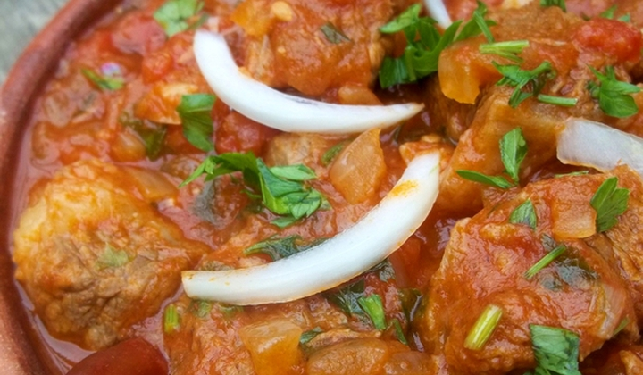

1.ჯამში მოათავსეთ კვერცხი მიქსერის საშუალებით ამოიყვანეთ დაამატეთ შაქარი და გათეთრებამდე დაამიქსერეთ.
2.ამოყვანილ კვერცხს დაუმატეთ დარბილებული კარაქი,ფქვილი,სოდა,ვანილი,და მარილი კარგად აურიეთ შემდეგ დაუმატეთ რძე და კარგად დაამიქსერეთ ბოლოს დაუმატეთ კაკაო კარგად აურიეთ.
3.გადაიტანეთ საცხობ ფორმაზე და თავზე მოაყარეთ რძიანი შოკოლადის ნატეხები.
4.გამოაცხვეთ 200 გრადუსზე 15-20 წუთი.
ოსტრი
ინგრედიენტები:

800 გრამი მჭლე საქონლის ხორცი
100 გრამი კარაქი
4 ცალი პომიდორი
1 ჩ/კ ხმელი ქინძი
1 ს/კ წითელი ცხარე წიწაკა
მარილი გემოვნებით
2 ცალი დაფნის ფოთოლი
3 თავი ხახვი
2 კბილი ნიორი
1 ს/კ პომიდვრის ტომატ-პასტა
15 გრამი ოხრახუში
200 გრამი მჟავე კიტრი
მომზადების ნაბიჯები
1.დაჭერით ხორცი საშუალო ზომის კუბიკებად და მოათავსეთ ქვაბში. ჩაუმატეთ დაფნის ფოთლები და დაასხით 200 მილილიტრი წყალი. დადგით დაბალ ცეცხლზე 2 საათით. დროგამოშვებით ურიეთ. მომზადებული ხორცი ძალიან რბილი უნდა იყოს. გადაწურეთ ნახარში წყალი და გადაინახეთ.
2.ხორცს ქვაბში 100 გრამი კარაქი ჩაუმატეთ და გემოვნებისამებრ მოაყარეთ მარილი. თხლად დაჭერით ხახვის მოზრდილი თავები და ჩაუმატეთ. შეურიეთ ეს ყველაფერი და დადგით დაბალ ცეცხლზე 7-8 წუთით. ხშირ-ხშირად ურიეთ. ხახვმა ფერი უნდა იცვალოს.
3.შემდეგ დაჭერით 4 ცალი დიდი, კანგაცლილი პამიდორი და ჩაუმატეთ. მაშინთვე მოურიეთ და განაგრძეთ შუშვა მინიმალურ ცეცხლზე 3-4 წუთის განმავლობაში.
4.ბოლოს თხლად დაჭერით ნიორი და ჩაუმატეთ ხორცს ხმელ ქინძთან და ტომატ-პასტასთან ერთად. მოურიეთ და ჩაამატეთ წითელი ცხარე წიწაკა. ჩაუმატეთ მარილიც, თუ ამას თქვენი გემოვნება მოითხოვს. მოურიეთ და ჩაუმატეთ გადანახული ბულიონი. ისევ მოურიეთ და განაგრძეთ დაბალ ცეცხლზე მზადება 5 წუთით.
5.საბოლოოდ წვრილად დაჭერით ოხრახუში, ჩაუმატეთ და მოურიეთ. დატოვეთ ცეცხლზე კიდევ 5 წუთით და კერძი მზადაა. სურვილისამებრ ჩაუმატეთ დაჭრილი მჟავე კიტრიც და გემრიელად მიირთვით!
ხინკალი
ინგრედიენტები
700 გრამი პურის ფქვილი
300 გრამი ძროხის ხორცი
200 გრამი ღორის ხორცი
200 გრამი ხახვი
მარილი გემოვნებით
1 ლიტრი წყალი
1 ჩ/კ შავი წიწაკა
მომზადების ნაბიჯები
1.წყლით ჩვეულებრივი, მაგარი ცომი მოვზილოთ და სპეციალური საგორავებლით მაგიდაზე გავაბრტყელოთ. მრგვალი ფორმებით დავჭრათ თანატოლ ნაწილებად და ისევ გავაბრტყელოთ.
2.ხორცსაკეპ მანქანაში 300 გრამი ძროხის და 200 გრამი ღორის ხორცი გავატაროთ. ასევე გავატაროთ 200 გრამი ხახვი და მიღებულ მასას 1 ჩაის კოვზი შავი წიწაკა და მარილი დავუმატოთ.
3.თითოეულ გაბრტყელებულ ცომზე 1 ჩაის კოვზი ხორცის მასა დავდოთ და შევუკრათ თავი შუა ადგილას. ცომი ისე უნდა შევკრათ, რომ არ დაიშალოს. კლასიკურ ხინკალს 33 ნაკეცი უკეთდება.
4.გამზადებული ხინკლები ადუღებულ, მარილიან წყალში ჩავყაროთ. როდესაც ზევით ამოტივტივდება და გაიბერება ის უკვე მოხარშულია.
თუ გინდათ მეტი რეცეპტების ნახვა, ეწვიეთ ქვემოთ მოცემულ ბმულს: